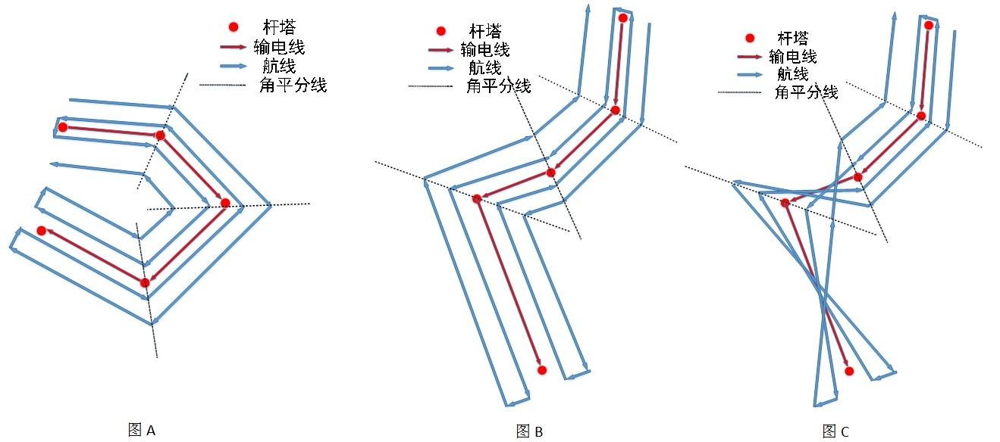
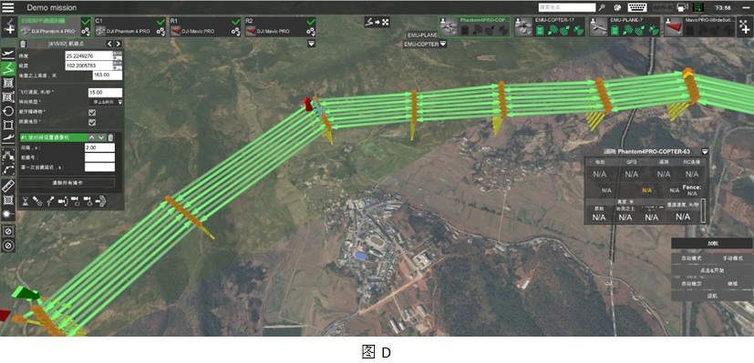

目前无人机的应用越来越广泛，大疆公司的无人机在全球消费级无人机市场超过了半壁江山。无人机飞行的门槛越来越低，消费者就越来越关心航拍数据的后期处理，使消费级无人机摆脱航模玩具的形象。
以大疆消费级无人机为例，我们可以借助手机观察到飞机传回的视频数据以及飞机上各个传感器的数据。但是如果仅仅看看视频，并不能充分发挥无人机的价值。借助于UgCS软件，我们可以获取实时的视频，并对视频做实时处理与分析。甚至还可以在保证安全的情况下，突破大疆公司客户端设置的禁飞区，或者突破大疆公司用户终端对航点个数的限制。
UgCS软件有四种授权方式，其中PRO和ENTERPRISE授权方式允许用户在SDK的基础上进行二次开发，用户完全可以根据自己的需要设计出自己的应用程序。
南京欣亿盛电子科技有限公司，在UgCS软件的基础上进行二次开发，目前已经积累了丰富的成功案例，以下介绍几个典型的应用案例：
受南方电网的委托，南京欣亿盛电子科技有限公司在UgCS软件的基础上进行二次开发，设计了无人机飞行航线辅助规划与安全分析工具。
该软件专用于电力线巡检的无人机路径规划。针对电力线巡检具体应用(通道快巡，通道测量，精确查巡)，生成三种不同类型的路径，路径文件可直接导入UgCS。
巡检线路的数据可由EXCEl和MySQL数据库两种方式导入，导入后支持分步生成和一键生成两种方式的生成路径。裕度、旁向间隔和转弯类型等参数可配置，生成路径后自动进行安全评估。
软件还加入了任务管理功能，对已规划任务进行管理，记录路径名称、区段、飞行时间和架次等信息，可进行快速查询和加载。
对像输电线路这样的带状区域建模，需要生成可以扫描带状区域的航线。航线的拐点都在角平分线上，相邻线路的间隔一致可调，无论输电线的走向如何变化，程序都能自动生成完整的航线如图A，图B所示，而不会出现如图C串线的现象，实际生成的航线如图D所示。
UgCS全称通用地面控制站，它可以兼容市面上大多数无人机，如DJI、Ardupilot、PX4、InnoFlight、Mikrokopter、Microdrones、MicroPilot、Kestrel、Ar.Drone等；完美地支持无人机的任务规划、无人机控制、摄像头控制、无人机姿态获取、无人机视频获以及对多架无人机同时操作等功能。
UgCS提供4种授权方式给用户使用，根据用户不同的权限开放不同的功能。UgCS SDK则提供给用户进行二次开发，用户对飞行器获取的图像和视频数据进行后处理，从而根据自己的课题需要开发出相应的应用程序。
南京欣亿盛电子科技有限公司是UgCS软件在中国大陆地区的唯一代理。公司座落在美丽的六朝古都南京市，从事电子设备、计算机软硬件技术开发、销售和技术咨询等，特别在无人机领域积累了丰富的经验。
UgCS全称通用地面控制站，它可以兼容市面上大多数无人机，如DJI、Ardupilot、PX4、InnoFlight、Mikrokopter、Microdrones、MicroPilot、Kestrel、Ar.Drone等；完美地支持无人机的任务规划、无人机控制、摄像头控制、无人机姿态获取、无人机视频获以及对多架无人机同时操作等功能。
UgCS提供4种授权方式给用户使用，根据用户不同的权限开放不同的功能。UgCS SDK则提供给用户进行二次开发，用户对飞行器获取的图像和视频数据进行后处理，从而根据自己的课题需要开发出相应的应用程序。
南京欣亿盛电子科技有限公司是UgCS软件在中国大陆地区的唯一代理。公司座落在美丽的六朝古都南京市，从事电子设备、计算机软硬件技术开发、销售和技术咨询等，特别在无人机领域积累了丰富的经验。
UgCS全称通用地面控制站，它可以兼容市面上大多数无人机，如DJI、Ardupilot、PX4、InnoFlight、Mikrokopter、Microdrones、MicroPilot、Kestrel、Ar.Drone等；完美地支持无人机的任务规划、无人机控制、摄像头控制、无人机姿态获取、无人机视频获以及对多架无人机同时操作等功能。
UgCS提供4种授权方式给用户使用，根据用户不同的权限开放不同的功能。UgCS SDK则提供给用户进行二次开发，用户对飞行器获取的图像和视频数据进行后处理，从而根据自己的课题需要开发出相应的应用程序。
南京欣亿盛电子科技有限公司是UgCS软件在中国大陆地区的唯一代理。公司座落在美丽的六朝古都南京市，从事电子设备、计算机软硬件技术开发、销售和技术咨询等，特别在无人机领域积累了丰富的经验。